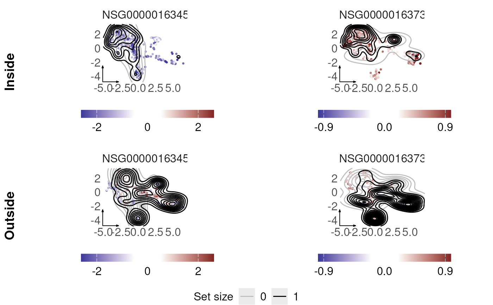

R/plotter.R
plotter_conformal_clustering.RdVisualizes gene-level differential expression and conformal clustering results on the aligned LEMUR UMAP embedding. Cells are displayed according to their LEMUR neighborhood membership and the size of the conformal prediction set. The cells inside and outside the conformal neighborhood prediction set are combined into a single stacked plot, annotated "Inside" / "Outside", with one shared "Set size" legend for the black/grey contours.
plotter_conformal_clustering(conformer_output, genes_to_plot)A single combined ggplot/cowplot object: the
"Inside" panel row stacked above the "Outside" panel row, each row
labeled accordingly, with one shared "Set size" legend (black = set
size 1, grey = the other set size observed in the data) below the
combined grid.
data("sce_reduced")
out_conformer <- conformeR(sce_reduced,
design_lemur = ~ patient_id + condition,
contrast_column = "condition",
n_embedding = 15,
genes_of_interest = c(
"ENSG00000163453",
"ENSG00000163734"
)
)
#> Selecting cells that are considered close with 'harmony'
#> Storing 20% of the data (600 cells) as test data.
#> Regress out global effects using linear method.
#> Find base point for differential embedding
#> Fit differential embedding model
#> Initial error: 4.5e+05
#> ---Fit Grassmann linear model
#> Final error: 1.38e+05
#> Find optimal neighborhood using zscore.
#> Validate neighborhoods using test data
#> Form pseudobulk (summing counts)
#> Calculate size factors for each gene
#> Fit edgeR model on pseudobulk data
#> Fit diff-in-diff effect
#> Find optimal neighborhood using zscore.
#> Validate neighborhoods using test data
#> Form pseudobulk (summing counts)
#> Calculate size factors for each gene
#> Fit edgeR model on pseudobulk data
#> Fit diff-in-diff effect
#> Find optimal neighborhood using zscore.
#> Validate neighborhoods using test data
#> Form pseudobulk (summing counts)
#> Calculate size factors for each gene
#> Fit edgeR model on pseudobulk data
#> Fit diff-in-diff effect
#> Warning: glm.fit: fitted probabilities numerically 0 or 1 occurred
plotter_conformal_clustering(out_conformer,
genes_to_plot = c(
"ENSG00000163453",
"ENSG00000163734"
)
)
